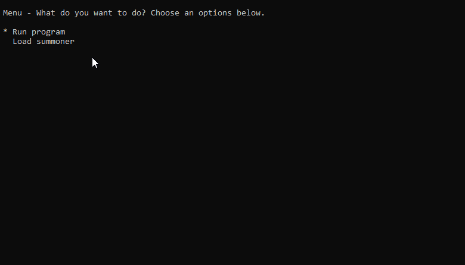

League Statistics - Home


League Statistics is a simple Python script that allows you to easily get statistics of a certain player in League of Legends on any server, using the League of Legends API. League Statistics is open source on GitHub, and please feel free to contribute if you know Python and have improvements.
Features
• Quickly load stats for a certain player
• Support for all servers
• Save and load player names
• And much more!
Requirements
League Statistics is tested and supported from v3.4 to the latest version of Python. It will run on those versions and above, however you may have varying mileage if you install earlier versions of Python and attempt to run it on those.
Modules required can be found in the requirements.txt file. They are:
• Pick pip install pick
• RiotWatcher pip install riotwatcher
• Requests pip install requests
Or, navigate to the download, and type pip install -r requirements.txt to install modules according to the requirements file.
You will need an API key from the Riot Developer website, which is free and easy. These last for 24 hours, but you can apply for a permanent one.
It is recommended that you install the latest version from the releases section to have a stable release.
Important note for Windows users - As League Statistics makes heavy usage of Curse, you'll need to install Curse for Windows. To do so, type pip install windows-curses. Make sure you run League Statistics from command prompt or via the Python CLI, as Curses does not work in third party apps such as PyCharm.
Credit
League Statistics uses some third party open source modules.
Firstly, RiotWatcher. RiotWatcher is what helps League Statistics connect to the Riot API, being a Python wrapper on top of it. Without it, League Statistics could not exist. Huge thanks for the author.
Secondly, Pick is what League Statistics uses to generate Curse menus. This makes it a lot easier to navigate League Statistics.
Support
There are numerous ways you can support. Any help to the repository on GitHub is great help. Please make sure you check current issues and select one that is not labeled as work in progress, and comment that you are doing the issue.
You can also support development via PayPal if you wish. Thanks for using League Statistics!